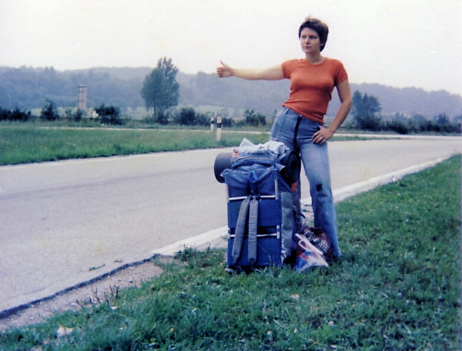

hitchhiking.org
hitchhiking.org
A network of independent travel projects
The open road belongs to all of us.
Free, community-run tools and spaces for people who choose to travel differently.
-
 HitchwikiPractical ridesharing knowledge since 2005.
HitchwikiPractical ridesharing knowledge since 2005.
- TrashwikiFreegan and low-impact travel since 2008.
 TrustrootsA community for sharing hospitality since 2014.
TrustrootsA community for sharing hospitality since 2014.- Hitchhiking forumQuestions, stories and conversations from the road.
- Hitchwiki EuropeLocal travel knowledge across Europe.
- Hitchwiki mapsFind and share places to hitch a ride.
- Rideshares.orgA Nostr-based ridesharing application, launched in 2025.
- Random RoadsA magazine about independent travel.

The road remembers
Hitchhiking has always been a human network.
One raised thumb can be an invitation to share stories, routes and a little trust.
Hitchhiking.org is a work in progress. Help us decide what comes next:
- set up a nostr based forum, in the spirit of nostroots
- explore the restored parts of Digihitch
- ai.hitchhiking.org
More ideas are welcome.